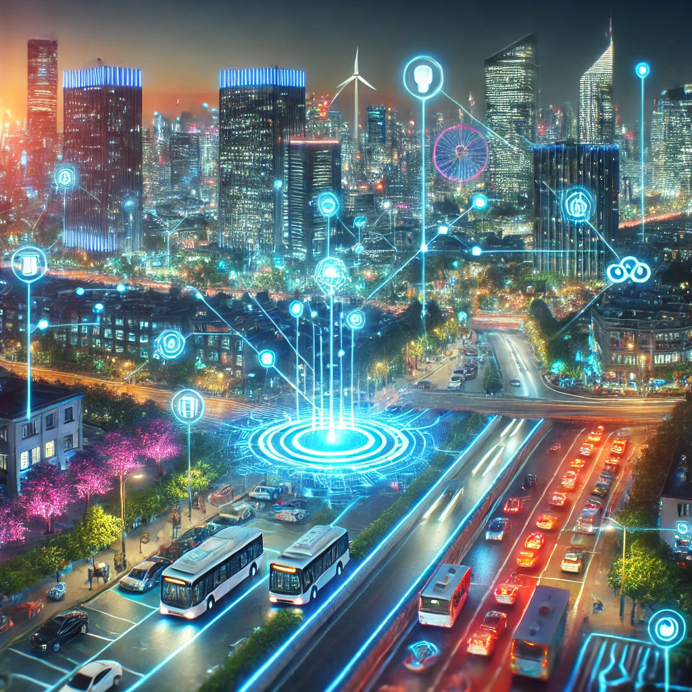
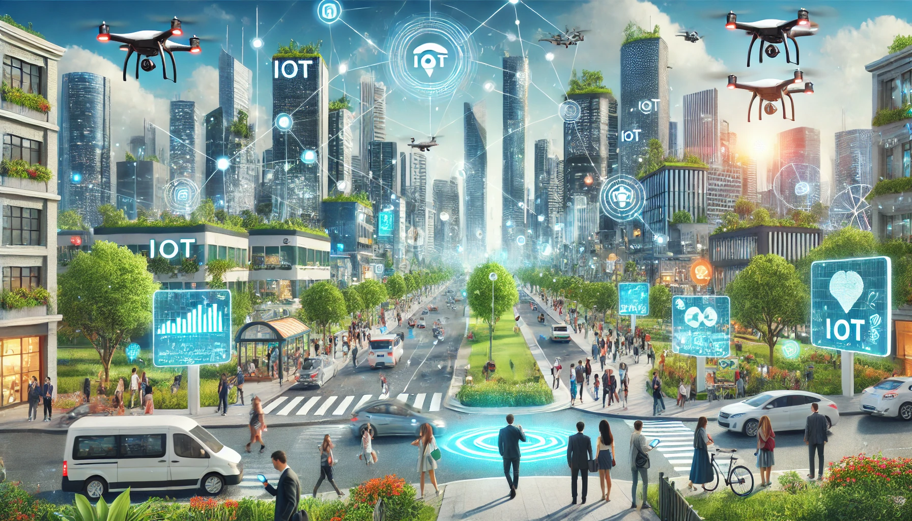
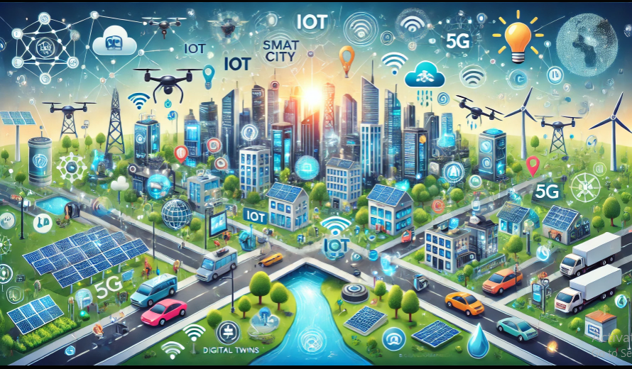
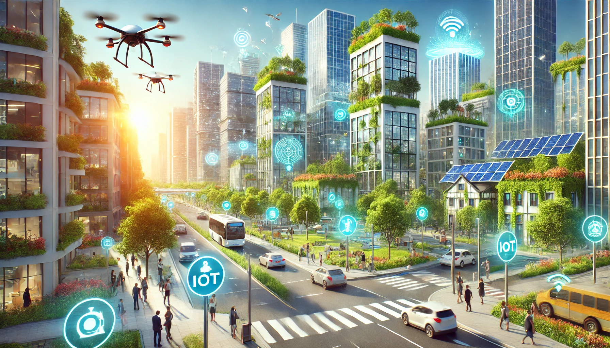

Smart City With Technologies
Welcome to our website, where innovation meets urban transformation. Explore the cutting-edge technologies shaping smart, sustainable cities. Discover intelligent transportation systems revolutionizing mobility. Learn about smart energy grids powering efficient urban living. Dive into IoT solutions enhancing connectivity across cityscapes. See how AI and big data drive smarter decision-making processes. Uncover advancements in renewable energy and eco-friendly designs. Understand the role of digital twins in urban planning and development. Experience smart waste management and water conservation in action. Find out how blockchain ensures security and transparency in governance.  Join us in envisioning a future of sustainable, tech-enabled cities. Enhancing lives, one innovation at a time—welcome to the future of urban living. Smart technologies have been rapidly evolving and are now making daily life more convenient, efficient, and connected. Explore to get new ideas for smart city
Technologies For Smart City
To Explore Gadgets click the button below:
Sustainability
Our smart city solutions focus on sustainable practices to reduce environmental impact:
- Smart energy grids to optimize electricity usage
- Advanced waste management systems, including recycling and composting programs
- Green building initiatives promoting energy-efficient structures
- Urban agriculture projects and green spaces to improve local food production
- Water conservation technologies, such as smart irrigation and water reuse systems
Explore solutions for smart technologies and fast teleportation:
Using smart solutions make life easier and more comfortable. There a so many solutions to choose from. Tap the button below to explore smart solutions for city life:
Interactive Smart City Map
Explore our interactive city map to see the locations of key smart city features such as electric vehicle stations, green spaces, and more.
Explore our interactive city map to see the locations of key smart city features such as electric vehicle stations, green spaces, and more.